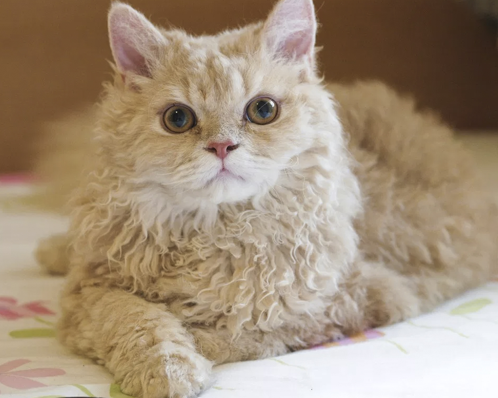

Походження
Селкирк-рекс (довгошерстий) названий так на честь гір Селкирк у штаті Вайомінг, де народилося перше кошеня породи у притулку для тварин у 1987 році. У кошеня була незвичайна кучерява шерсть. У ході експериментальної програми розведення за участю згаданої кішки та її нащадків було виявлено, що мутація шерсті в кучеряву була домінуючою ознакою: у половини всіх кошенят була кучерява шерсть. Ця ознака є рецесивною в інших порід рексов. Порода селкірк-рекс дуже популярна у США та Канаді. У цих країнах завдяки своїй разючій густій і кучерявій шерсті тварини отримали прізвисько «кішка-вівця».
Особистість
Селкирк-рекс має незворушний вигляд, проте всередині це ніжна кішка, що тонко відчуває. Любить увагу, із задоволенням приймає ласку господаря. Секірк-рекси ведуть активний спосіб життя, тому ця порода підійде тим, хто проводить вдома мало часу. Здоров'я (проблеми) Селкірк Рекс добре живе довго. Деякі Селкірк Рекси можуть страждати від втрати вовни. Через вплив на породу перських кішок, Селкирк Рекс зареєстрована в GCCF у Великій Британії та перевіряється на наявність полікістозної хвороби нирок, характерної, головним чином, для Перських кішок. Як інші кішки, для підтримки здоров'я Селкирк рекс потребує регулярної вакцинації, боротьби з паразитами та щорічного медичного огляду
Здоров'я
Представники цієї породи стримані, незалежні та самодостатні. Їм подобається перебувати в компанії господаря, якщо ситуація не передбачає високої активності. З цих кішок виходять чудові компаньйони. Стримано ставляться до відкритих просторів, віддають перевагу знайомим приміщенням. Як і іншим представникам котячих, цим тваринам потрібен постійний доступ до їжі, води та лотка. Лежанку для кішки краще розмістити вище — у місці, де тварина почуватиметься у безпеці.
Грумінг
Шубка довгошерстого селкірка потребує ретельного і ніжного догляду, інакше вона буде сплутуватися в ковтуни. Для розчісування рекомендується використовувати гребінь із великими зубами. Не перестарайтеся – надмірний догляд за вовною для обох видів може порушити структуру вовни. Короткошерстний різновид цієї породи вимагає меншого догляду. Стан вовни залежить від здоров'я кішки, тому регулярно проходьте медичні огляди, а також обробляйте тварину від паразитів.